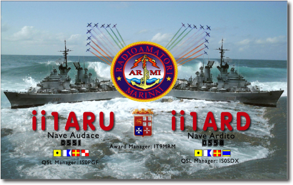

Ultimo Ammaina Bandiera Classe
Audace
|
Articolo Ultimo Ammaina
Bandiera classe Audace
|
|
 |
NOTIZIARIO DELLA
MARINA
Articolo di Franco Reisoli-Matthieus Ibertis
Novembre - Dicembre 2006 -
Pag 32
Si è svolta
alla presenza del comandante in Capo del Dipartimento Militare Marittimo
dell'Alto Tirreno, di numerosi ex Comandanti ed ex appartenenti ai loro
equipaggi, di una folta rappresentanza dell'Associazione Nazionale Marinai
d'Italia nonché di una nutrita schiera di familiari, la suggestiva cerimonia
dell'ultimo Ammaina Bandiera delle Navi Ardito e Audace, ormeggiate
all'interno della Base Navale della Spezia.
Si tratta di Unità entrate in linea all'inizio degli
anni Settanta, che hanno saputo coniugare la tradizione derivante
dall'essere ciascuna la quarta Unità con il proprio nome, alla modernità di
un progetto innovativo, come evidenziato dal suo intervento dal loro
comandante, il Capitano di Vascello Gianluca Turilli.
Le Unità della classe Audace sono la naturale
evoluzione tecnica ed operativa dei Caccia Lancia Missili della classe
impavido ed hanno rappresentato i prototipi della flotta, poi realizzata
grazie alla Legge Navale.
Come Unità dedicate alla difesa aerea, Ardito e Audace
in oltre 30 anni di attività hanno operato, sia in Mediterraneo che nei mari
del mondo, partecipando ad innumerevoli operazioni reali, esercitazioni e
significative attività di rappresentanza.
|
|
A testimonianza delle parole del Comandante e
sufficiente ricordare che l'Ardito nella sua lunga vita operativa ha
percorso 562.000 miglia e l'Audace 630.00 miglia in oltre 56.000 ore di moto
ciascuna.
Con l'uscita dal servizio di queste due meravigliose
Unità si " ammaina " la propulsione navale a vapore, iniziata per la Marina
Militare, nel lontano 1861 con l'incorporamento del Vascello ad elica
Monarca della Marina borbonica del regno delle due Sicilie nella Regia
Marina, sotto il nome di Re Galantuomo. |
Torna
ad inizio pagiana
Articolo
su Radio Rivista


torna ad
inizio pagina
-Cerimonia
dell' ultima ammaina bandiera-
| Il
29 Settembre 2007 nell'Arsenale di La Spezia, alla presenza del
Comando in Capo dell'Alto Tirreno, dai Comandanti e degli equipaggi
di ieri e di oggi di Nave Audace e Nave Ardito, si e svolta la
cerimonia dell'ultima ammaina bandiera delle due unità. La
manifestazione si è aperta con il saluto del Capo di Stato Maggiore
della Marina
Ammiraglio di Squadra Paolo La Rosa. |
Messaggio del Capo di Stato Maggiore della Marina Ammiraglio di Squadra
Paolo La Rosa
All'atto
dell'ultimo ammaina Bandiera, volgo la mia più profonda considerazione ai
cacciatorpediniere Ardito e Audace, che oggi lasciano definitivamente la flotta.
Dilungo con
animo partecipe il sentito rispettoso grazie a nome della marina militare tutta
per l'intenso servizio prestato, portando a termine innumerevoli missioni in
diversi bacini del mondo e cosi assicurando grande consenso e lustro alla Forza
Armata e alla Nazione.
Ai comandanti e
agli equipaggi che si sono succeduti a bordo delle due importanti unità tenendo
alto e saldo il prestigio dell' Italia sul mare, giunga la mia più profonda
riconoscenza per la capacità professionale e spirito di sacrificio, per la
dedizione al servizio sempre dimostrati e che da sempre fondano il patrimonio
ideale della nostra marina.
Con animo
partecipe, rendo referente omaggio all'ultimo ammaina Bandiera di nave Ardito e
di nave Audace, che hanno visto formare e operare generazioni di equipaggi e nel
rinnovare i sentimenti della più alta considerazione e sentita vicinanza della
Forza Armata, giunga a tutti i partecipanti il mio ben augurante saluto.
Il Capo di
Stato Maggiore della Marina Ammiraglio di Squadra Paolo La Rosa
|
Dopo
il messaggio di saluto del capo di stato della Marina, prende la
parola il C.V. Gianluca Turilli |
Discorso del
Capitano di Vascello Gianluca Turilli
Ammiraglio,
autorità, signori e signore equipaggi di ieri e di oggi, dell'Ardito e
dall'Audace, innanzitutto vorrei ringraziare voi tutti per aver voluto con la
vostra presenza
dare
un adeguato risalto all'odierna cerimonia dell'ultimo ammaina Bandiera.
Voglio
altresì ringraziare, le Associazioni d'Arma per il loro intervento e
l'Associazione Radioamatori Marinai Italiani, che con la sua iniziativa ha
consentito di portare l'eco di questo evento oltre i confini della marina
militare.
Il momento
dell'ultimo ammaina Bandiera è un evento significativo nella vita di ogni unità
navale e lo è a maggior ragione oggi che rivolgiamo il nostro saluto a due Unità
che per più di 35 anni hanno servito la Patria in ogni circostanza.
L'Audace e
l'Ardito nascono rispettivamente a Riva Trigoso e a Castellammare di Stabia dove
sono state impostate la prima il 27 aprile 1968 e la seconda il 10 luglio dello
stesso anno, per essere poi varate rispettivamente il 2 e il 27 novembre 1971.
L'Audace
quarta unità a portare questo nome, è stata consegnata alla Marina il 16
novembre 1972, ed ha ricevuto la Bandiera di combattimento dal comune di
Trieste, a testimonianza dello stretto rapporto che lega la città alabardata
alla omonima Unità , che per prima ha portato ad essa il tricolore il 3 novembre
1918.
L'Ardito
quarta unità a portare questo nome nella storia della marina, è stata consegnata
alla Marina il 6 dicembre dello stesso anno, ricevendo la Bandiera di
combattimento dall'Associazione Nazionale Marinai d'Italia e dalla Lega Navale
Italiana.
Le Unità
della classe Ardito, sono la naturale evoluzione tecnica dei caccia
lanciamissili della classe Impavido, ed hanno rappresentato per la Marina
Militare i prototipi della flotta poi realizzata grazie alla legge navale.
Le due navi,
prima Unità Italiane con il ponte di coperta continuo, hanno incorporato nel
loro progetto molteplici innovazioni e nel corso dei lavori di ammodernamento di
mezza vita, sono state dotate di un efficiente sistema di comando e controllo.
Nel loro
impiego operativo, l'Ardito e l'Audace, sono state per anni la punta di diamante
della squadra navale, sempre all'avanguardia sotto il profilo tecnico, su di
esse sono state condotte numerose sperimentazioni tra le quali risultano degne
di menzione quelle del cannone da 76/62
super
rapido e del primo sistema di comunicazioni satellitari nazionali Sirio.
Come unità
dedicate alla difesa aerea, Ardito ed Audace, in più di 30 anni di attività
hanno operato sia in mediterraneo che nei mari del mondo, partecipando a
innumerevoli operazioni reali, esercitazioni e qualificate attività di
rappresentanza, chi ha servito queste Unità avrà ancora vivo il ricordo di
quanto fatto e citare oggi tutte le attività portate a compimento sarebbe
impossibile considerato il loro numero, vorrei tuttavia ricordare alcuni degli
eventi più significativi della vita di queste due Unità.
Per l'Ardito
menzionerò ad esempio la campagna promozionale negli Stati Uniti ed in Sud
America, condotta dal settembre 1974 al febbraio 1975;
La visita a
Dovreiza nell'unione sovietica prima della caduta del muro di Berlino;
La campagna
in nord Europa per il Giubileo d'argento della reggina Elisabetta nel giugno
1977;
Il giro del
mondo condotto insieme a nave Lupo dal luglio 1979 al febbraio 1980 ;
La
partecipazione alla missione Libano 2 dal luglio 1983 al febbraio 1984 ;
La campagna
in nord Europa ed in mar nero dal maggio 1996 all'ottobre dello stesso anno;
Le
operazione Pinnak e Allied Force nella primavera estate del 1999;
E per finire
l'operazione Campidoglio del 2004 e la sorveglianza Nunzio Wobis dello spazio
aereo dei cieli vaticani, svoltosi lo scorso anno.
In totale
l'Ardito nella sua lunga vita operativa, ha percorso 562.000 miglia in circa
56.000 ore di moto.
Per
l'Audace, ricorderò invece la campagna in Somalia per l'intervento delle Nazioni
Unite nel luglio del 1982;
La
partecipazione alla operazione Libano 2 dal febbraio al marzo 1984;
L'operazione
Girasole per il pattugliamento del canale di Sicilia durante la crisi Libica dal
marzo al luglio del 1986;
La missione
golfo persico 2 nell'ambito dell'operazione Teter For nel gennaio ad aprile del
1991;
L’operazione
Start Gas dal novembre del 1993 al giugno 1994;
La campagna
addestrativa nel mar nero con le Unità appartenenti all'ex stato di Varsavia;
L'operazione Dinak dal febbraio al giugno del 1993;
E per finire
la partecipazione Columbus nell'autunno del 2003;
In totale
l'Audace nella sua laboriosa vita operativa, ha percorso 630.000 miglia in circa
57.000 ore di moto i dati che emergono correndo la storia di queste navi sono di
uno spessore notevole, e testimoniano inequivocabilmente le mutazioni che si
sono verificate nel quadro strategico globale, con il correttivo spostarsi del
fuoco dall'attività che ha caratterizzato il periodo dallacontrapposizione dei
due blocchi maggiormente mirata all'addestramento e alla presenza all'estero
dagli ambasciatori del nostro paese, alla partecipazione odierna e nel più
recente passato ad operazioni reali della difesa degli interessi nazionali ed
alla pacificazione di area di crisi, in tutte le circostanze che il mondo ci ha
proposto per i suoi cambiamenti.
L'Ardito e
l'Audace perfetta sintesi della sinergia raggiunta dai loro equipaggi e dai
sistemi e apparati di bordo, hanno saputo dare sempre una risposta eccellente ed
adeguata mantenendo alto il valore delle tradizioni e dell'impegno della nostra
marina.
L'Ardito e
l'Audace, hanno mantenuto inalterata nel tempo la loro assegnazione alla base di
La Spezia, operando inizialmente inquadrati nella prima divisione navale poi
nel comando gruppo navale e per finire nella seconda squadriglia fregate.
Arrivati al
termine di questo intenso periodo, mi preme perciò ringraziare il locale
Arsenale e i vari Enti della base navale e il qualificato supporto sempre
fornito in questi anni, supporto che trova testimonianza nei risultati operativi
conseguiti da queste belle navi e dalla loro cifra globale di assistenza che
alla base al passaggio alla riserva le vedeva ancora pronte senza significative
limitazioni .
Per finire, devo ringraziare i miei equipaggi e tutti coloro che mi hanno
preceduto a bordo, senza il loro continuo impegno e il continuo sacrificio loro
e dei famigliari che sono stati loro affianco, non sarebbe stato possibile per
queste navi onorare il loro nome la Marina e la Nazione, a loro tutti grazie di
cuore per quanto fatto e per come lo hanno fatto, da domani L'Ardito e l'Audace
non faranno più parte del naviglio militare dello stato, il loro nome rimarrà
tuttavia vivo ed indelebile nella memoria di tutti coloro che hanno fatto parte
dei loro equipaggi e che conserveranno per sempre il ricordo dei momenti
trascorsi su queste lamiere.
Viva
l'Ardito viva l'Audace viva la Marina.
|
Terminato l'intervento il Comandante C.V. Gianluca Turilli, prende la parola il
Comandante in Capo, |
(Manca discorso)
| Dopo
i saluti di rito e la preghiera del marinaio, la cerimonia si avvia
verso la parte conclusiva ma
forse anche la più importante, si rendono gli onori alla Bandiera e
si da il via all'ammaina Bandiera, sono momenti di grande
commozione.
La Bandiera viene piegata, è portata fuori dalla nave con gli onori
più alti, tra le note intonate dalla banda
della Banda della Marina
Militare e gli acuti
fischi dei nocchieri. |
raccolta foto
Raccolta Foto
|
foto n. 1 |
|
 |
|
Fronte della cartolina QSL dedicata
all'evento |
|
foto n. 2 |
%20Il%20crest%20commemorativo.jpg) |
|
Il crest commemorativo |
|
foto n. 3 |
%20Team%20II1ARD%20e%20II1ARU%20al%20completo.jpg) |
|
Il team
II1ARU e
II1ARD al completo |
|
foto n. 4 |
%20Bordo%20nave%20Audace%20-%20Marco%20IS0KEB%20alla%20postazione%20in%20foni.jpg) |
|
Nave Audace Postazione in fonia - IS0KEB -
Marco |
|
foto n. 5 |
%20Bordo%20nave%20Audace%20-%20Antonio%20alla%20postazione%20in%20fonia.jpg) |
|
Nave Audace Postazione in fonia - Antonio |
|
foto n. 6 |
%20Bordo%20nave%20Audace%20-%20Giovanni%20IS0PGF%20alla%20postazione%20CW.jpg) |
|
Nave Audace Postazione CW - IS0PGF - Giovanni |
|
foto n. 7 |
%20Bordo%20nave%20Audace%20-%20Edgardo%20IZ1ELP%20alla%20postazione%20in%20CW.jpg) |
|
Nave Audace Postazione CW - IZ1ELP - Edoardo |
|
foto n. 8 |
%20La%20stazione%20II1ARD%20only%20cw.JPG) |
|
La stazione II1ARD (only CW) |
|
foto n. 9 - 10 |
%20Bordo%20nave%20Ardito%20-%20l'antenna%20verticale%207+%20della%20ECO%20ant.JPG) |
%20Plancia%20Nanve%20Ardito%20-%20La%20barra%20del%20timone%20-%20il%20nominati.jpg) |
|
Antenna verticale 7+ della ECO su Nave Ardito |
La plancia di Nave Ardito ( il nominativo ) |
|
foto n. 11 |
%20Bordo%20nave%20Ardito%20-%20l'antenna%20filare%20impiegata%20nella%20sta.JPG) |
|
Antenna filare allestita a Bordo di Nave
Ardito |
|
foto n. 12 |
%20Nave%20Ardito%20-%20Postazione%20CW%20opera%20il%20Presidente%20INORC%20An.jpg) |
|
Postazione CW - INORC - su Nave Ardito |
|
foto n. 13 |
%20Cosmo%20IK0JFS%20-%20nella%20stazione%20II1ARD%20only%20cw.jpg) |
|
Postazione only CW Nave Ardito - IK0JFS -
Cosmo |
|
foto n. 14 |
%20Bordo%20nave%20Ardito%20-%20Postazione%20in%20fonia%20Orazio%20IZ1CCH.jpg) |
|
Postazione Fonia su Nave Ardito - IZ1CCH -
Orazio |
|
foto n. 15 |
%20Bordo%20nave%20Ardito%20postazione%20in%20Fonia%20Nicola%20IW1RLR%20(1).jpg) |
|
Nave Ardito Postazione Fonia - IW1RLR -
Nicola |
|
foto n. 16 |
%20Bordo%20Nave%20Ardito%20-%20postazione%20fonia%20Fabrizio%20IZ1FCF.jpg) |
|
Nave Ardito Postazione Fonia - IZ1FCF -
Fabrizio |
|
foto n. 17 |
%20Sala%20Radio%20Nave%20Ardito%20-%20IARD%20-%20Piergiorgio%20IS0SDX%20per%20u.jpg) |
|
Sala radio Ardito - Piergiorgio - IS0SDX |
|
foto n. 18 |
%20Antonio%20I1ZB%20-%20Alberto%20IT9MRM%20e%20il%20consigliere%20nazionale.JPG) |
|
Alberto IT9MRM Antonio I1ZB e il consigliere
nazionale |
|
foto n. 19 |
 |
|
IT9MRM - IZ1CCH - I1ZB |
|
foto n. 20 |
 |
|
Nave Audace in Golfo Persico - 1991 |
|
foto n. 21 |
 |
|
Nave Ardito in navigazione |
|
foto n. 22 |
 |
|
*** |
|
foto n. 23 |
 |
|
*** |
|
foto n. 24 |
 |
|
*** |
|
foto n. 25 |
 |
|
*** |
|
foto n. 26 |
 |
|
IT9RMR - IS0SDX |
|
foto n. 27 |
 |
|
Foto manifestazione Ultimo Ammaina Bandiera
classe Audace |
▲ Inizio Pag.